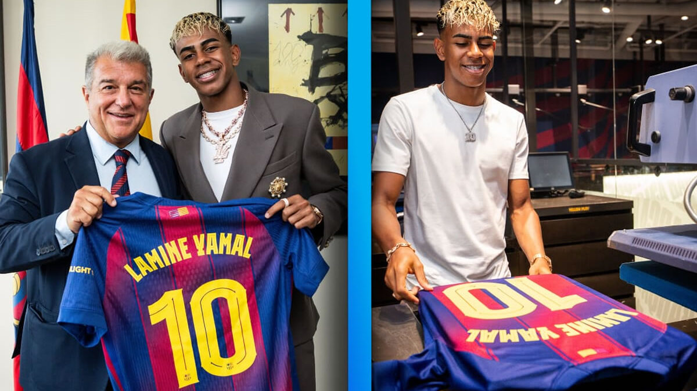

Biography
Lamine Yamal Nasraoui Ebana was born on July 13, 2007, in Esplugues de Llobregat, Barcelona. With a Moroccan father and an Equatoguinean mother, he grew up in Catalonia and showed great talent with the ball from a very young age. He trained at La Masía, FC Barcelona’s academy, where his speed, dribbling skills, and maturity made him one of the club’s brightest prospects. In April 2023, he made his first-team debut against Real Betis, becoming the youngest player to do so in the 21st century.
On the international stage, Yamal chose to represent Spain, making his debut in September 2023 and scoring a goal against Georgia, which made him the youngest player ever to debut and score for the national team. His rapid rise has led many to consider him one of the most promising footballers in the world, already established as a starter for Barcelona and an important figure for Spain.